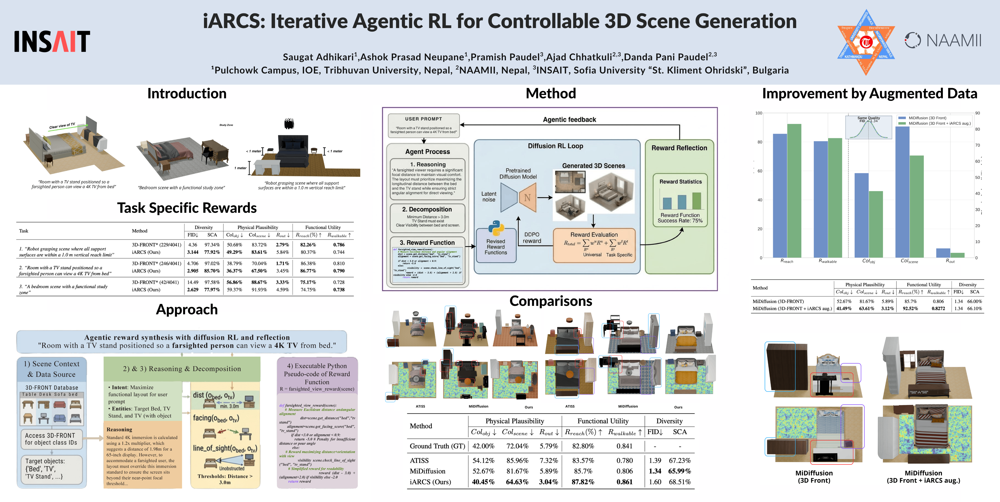
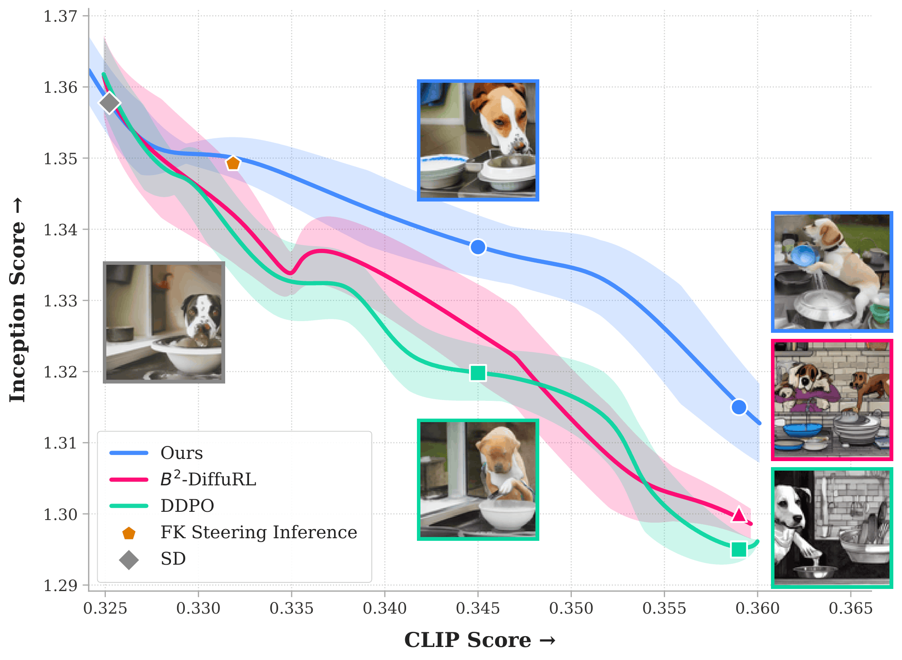
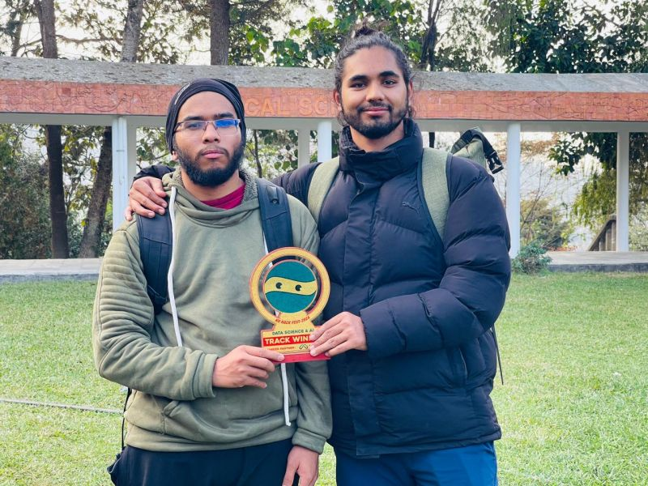
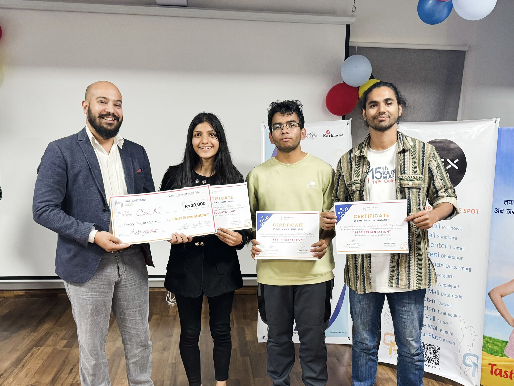
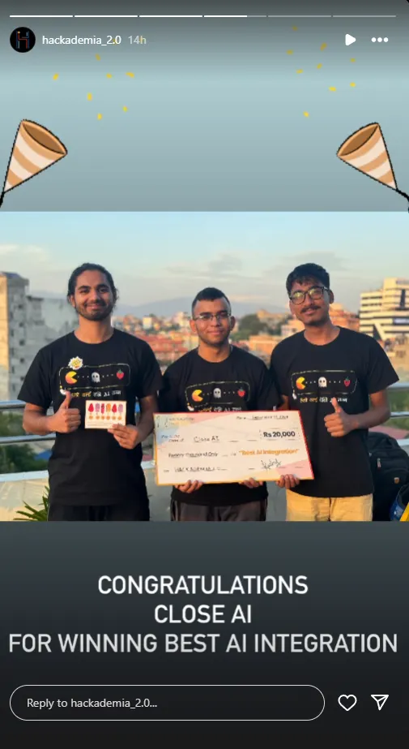
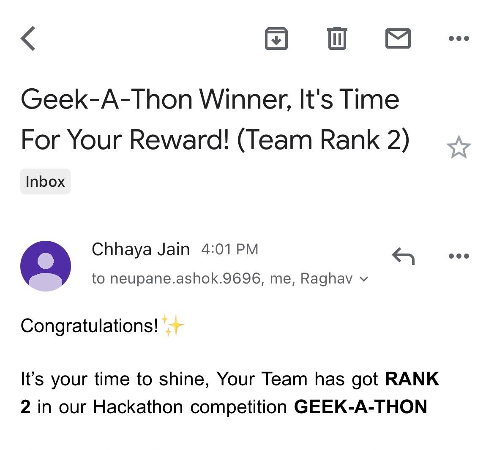
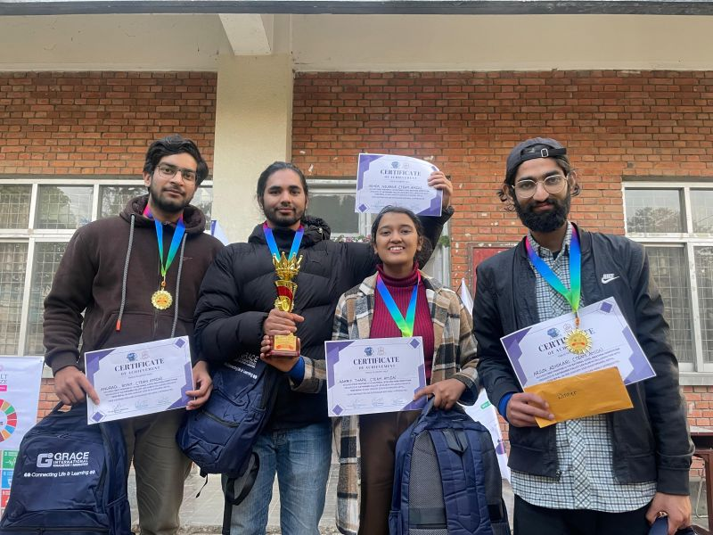

{ AI Engineer | Software Engineer }
Building systems at the frontier of LLMs, diffusion models, 3D generative AI, and computer vision — from research prototype to production.
I'm an AI Engineer finishing my Computer Engineering degree at Pulchowk Campus, Tribhuvan University — where I ranked 47th nationally among 15,000+ candidates. I've spent the past three years building AI systems that live beyond notebooks: deployed RAG agents, fine-tuned diffusion pipelines, 3D scene generators, and deepfake detectors.
My work spans both ends of the AI stack. On the research side, I have a paper accepted at CVPR 2026 and another under review. On the engineering side, I've delivered production systems for freelance clients, shipped at Sceneverse.ai, and taught 255+ hours of AI to developers across Nepal.
I care about systems that are controllable, efficient, and real — not demos that look good in slides.
Sceneverse.ai
Independent
Independent
Fusemachines
Agentic AI optimization loop with RL fine-tuning so pretrained 3D scene generators satisfy functional constraints. Reduced scene collisions from 81% → 62% and out-of-boundary objects from 5% → 3%. Presented at CVPR 2026, Denver.

Novel RL-based post-training method for diffusion models that improves reward alignment while preserving image quality and diversity. Built automated evaluation pipelines for reward modeling, fidelity checks, and diversity metrics.

VideoMAE-based model with 95%+ accuracy on Nepali video datasets. Log-linear sequence scaling for efficient long-video inference. Built with Khalti.
Fine-tuned IDMD diffusion models for 20× faster virtual try-on without fidelity loss. Evaluated CatVTON, IDM-VTON, and OOTDiffusion pipelines. KU Hackfest AI Track Winner.
FastAPI + React web app with custom BERT model for real-time sentiment analysis of Olympic social media posts. GeeksForGeeks Hackathon runner-up.
Intelligent traffic control using ESP32, Arduino, and computer vision for real-time vehicle detection and classification. Automated signal timing based on live traffic counts.
Ultra-lightweight VLM system for real vs. AI-generated image classification. 98.7% on seen generators, 87.3% on unseen — strong generalization for a deployable solution.
End-to-end RAG pipeline for automated exam grading in Kathmandu Valley schools. Document retrieval, LLM reasoning, prompt evaluation, and workflow automation.
3D Indoor Scene Synthesis paper accepted and presented at the 3rd Synthetic Data for Computer Vision Workshop, Denver, Colorado.

Won the AI track at KU Hackfest with the Fashion Virtual Try-On system powered by fine-tuned diffusion models.

Awarded Best Presentation at Hackademia for outstanding research communication and technical depth.

Recognized for the Best AI Product at Hackademia 2, demonstrating real-world impact and engineering quality.

Won the Geek-A-Thon hackathon organized by GeeksForGeeks, competing against top engineering students.

Won the Leo Club Ideathon for innovative AI-driven solution addressing real-world social challenges.
I'm actively looking for AI engineering roles — production, research, or both. If you're building something worth caring about, let's talk.